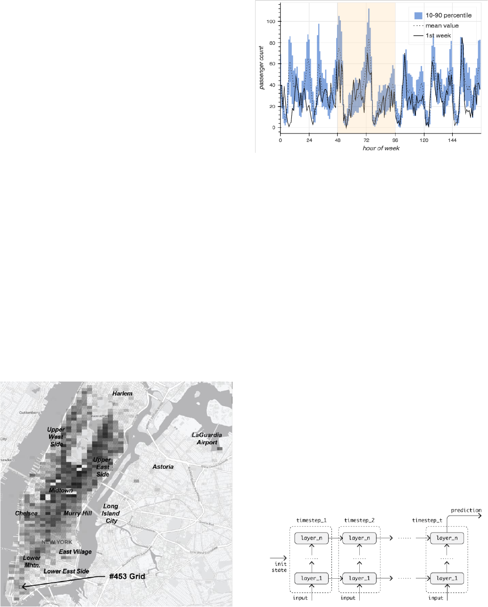
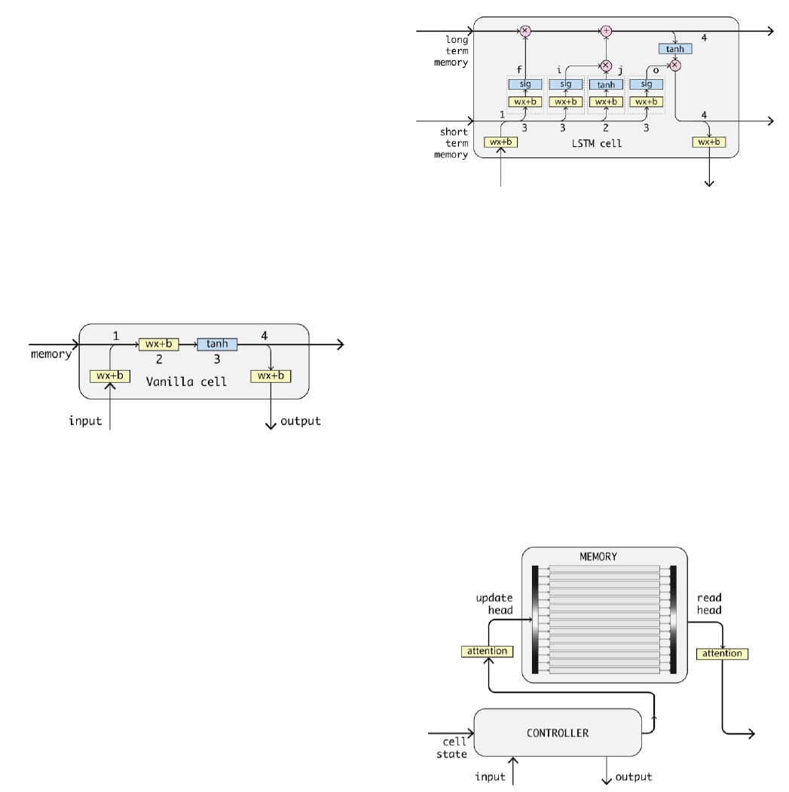
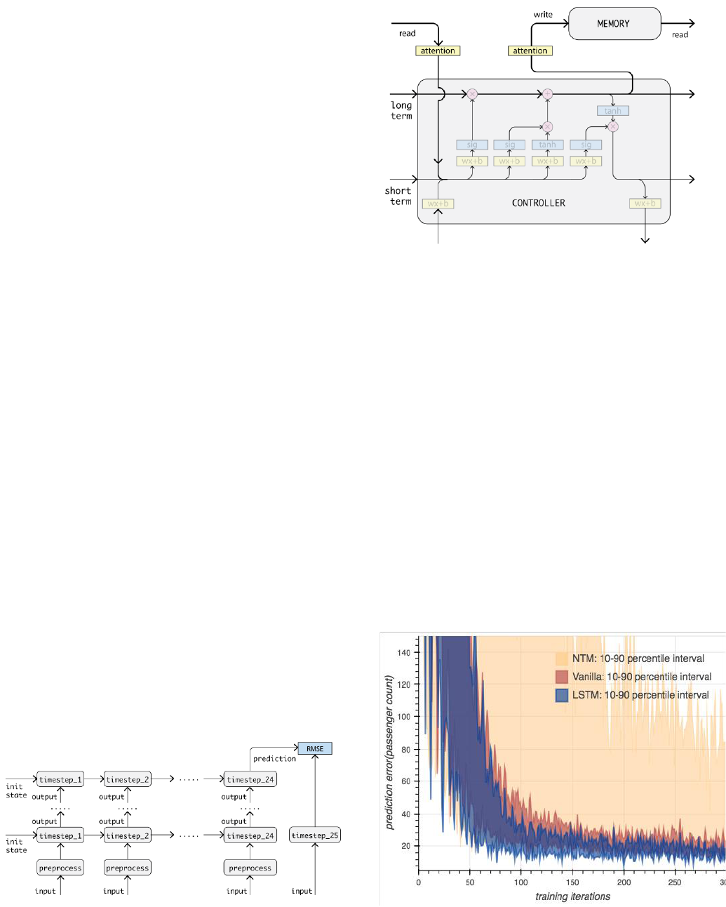
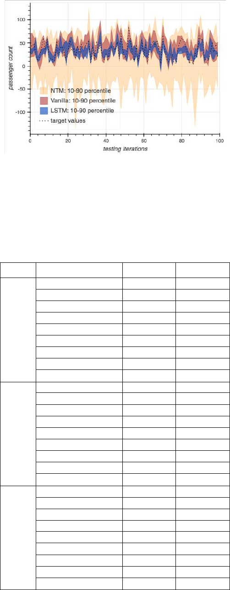
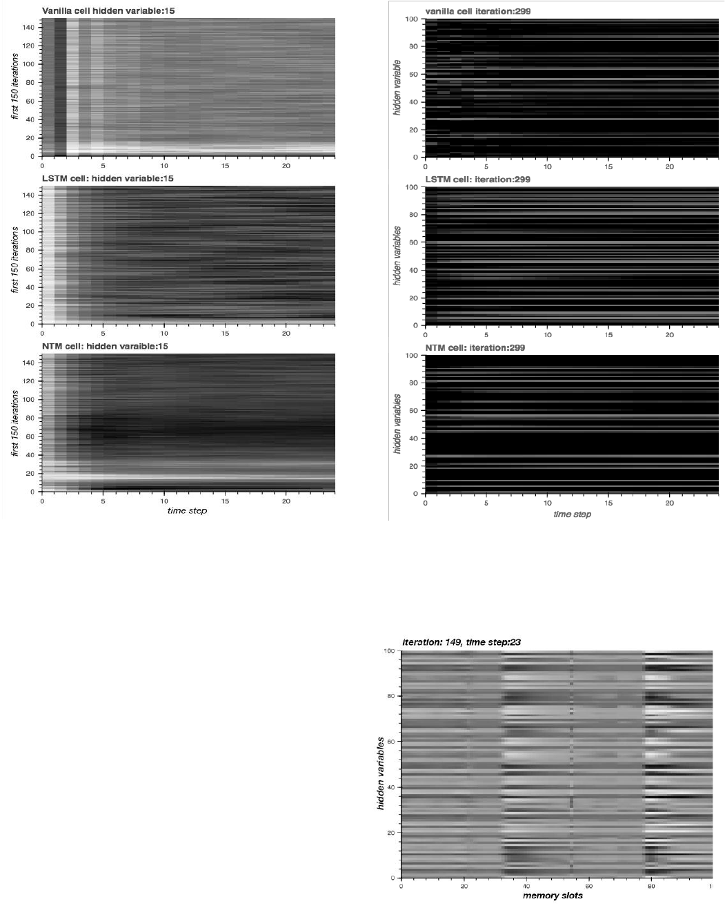

RNN as a Multivariate Arrival Process Model:
Modeling and Predicting Taxi Trips
Xian Lai and Gary M. Weiss
Department of Computer & Information Science
Fordham University
New York, USA
{xlai4, gaweiss}@fordham.edu
Abstract—Understanding time-related geospatial data is a
very interesting and challenging task, but is necessary to support
an efficient and intelligent urban environment. In this paper we
model taxi trips in New York City from historical data and by
using a recurrent neural network. The goal of the model is to
gain a better understanding of the spatial-temporal patterns
related to taxi travel in New York City, so that we can better
predict demand. This paper uses the taxi domain to explore the
usage of different neural network models for this type of
prediction task. In particular, three types of recurrent neural
network cells are evaluated: vanilla cells, Long Short Term
Memory cells, and Neural Turing Machine cells. The internal
states of these models are also examined, during the learning
process, to better understand the key features of the different cell
structures.
Keywords—Time series; geospatial data; Recurrent Neural
Network; vanilla RNN cell; Long Short Term Memory; Neural
Turing Machine.
I. INTRODUCTION
According to 2016 New York City Taxi and Limousine
Commission Factbook, in 2015 13,600 licensed yellow taxi
cabs made between 300,000 and 400,000 trips per day. These
yellow cabs, along with other for-hire vehicles like Boro taxis,
black cars, Uber, and Lift, help to satisfy the tremendous of
transportation needs of New Yorkers.
Providing a reasonably accurate prediction of when and
where passenger demand will occur is of great importance to
taxi drivers and their companies, as this information can save
time and fuel, and maximize profits. This information will also
benefit passengers, since it would increase the availability of
these transportation services, especially at busy hours and
popular locations. It can also help to mitigate traffic
congestion, reduce air pollution, and help inform other urban
transportation systems (e.g., bike-sharing and ride-sharing
services).
One approach might be to use existing arrival process
work, which is a well-studied topic. Using this approach, the
number of times an event occurs is modeled as Poisson
distribution described by following probability mass function:
In this equation is the number of occurrences of an event
in an interval time and the arrival rate is the average times of
occurrence. For a complex arrival process problem like taxi
pick-ups or drop-offs, the arrival rate is often not constant, but
rather depends on time and other complex factors.
Several studies have applied this approach to spatial-
temporal datasets, prompted by the advent of sensor
technologies like GPS and WiFi, which are easily incorporated
into vehicles, or are available via the ride or car-sharing
businesses that rely on smartphones. For example, Moreira-
Matias et al. [3] used a sliding-window ensemble framework
with a time-varying Poisson model, weighted time-varying
Poisson model, and ARIMA model, to predict the spatial
distribution of taxi passengers. Li et al. [4] proposed an
improved ARIMA model, which considers not only the nearest
historical data, but also the periodicity of the data to forecast
passenger quantities in city hotspots. Kaltenbrunner et al. [5]
used an AutoRegression Moving Average (ARMA) model to
learn cyclic mobility patterns in the community bicycle
program in Barcelona, and made short term predictions for the
number of available bikes in a selected station. Min and
Wynter [6] proposed a refined version of Vector-ARMA model
to forecast the traffic in a road network.
The first two studies listed above only focused on modeling
the time-dependent arrival rate (average passenger count) in
fixed intervals as a single variable. While Kaltenbrunner et al.
and Min et al. took spatial dependencies into account, they
considered only limited number of neighboring locations. In a
case like traffic prediction, high dependencies don’t necessary
exist in neighboring locations. Many important factors like
transportation hubs far away should also be considered.
These studies all used ARMA models or variations of these
models. These models describe the prediction as a weighted
combination of a sequence of historical observations, and a
sequence of errors following normal distribution, and only
work with univariate data. However geographical data often
requires the model to take input of variable-length and output a
prediction of variable-length. To better model the process
under a complicated urban environment, it is best to include the
environment itself into the model. In other words, we should
build a multivariate model taking account of taxi cab drop-offs
in all locations, in order to predict the arrival rate in any
particular location. In this paper, we present 3 types of RNN
models that can handle multiple arrival processes
simultaneously and learn the complicated relationship between
them.
The paper is organized as follows. Section II describes the
New York City taxi data set, while Section III provides

relevant background information on Recurrent Neural
Networks and the three cell structures that are used in these
models. Our experiments and results are then presented in
Section IV. Section V discusses the internal state or memory of
these models during the learning o the spatial-temporal patterns
of taxi trips. Section VI then provides our conclusions and
describes future work.
II. NEW YORK CITY TAXI DATA SET
The yellow taxi trips data set used in this study was
collected and made available online by New York City Taxi
and Limousine Commission [7]. The data set contains most of
the yellow taxi trips in New York City from 2009 to 2017. The
machines installed on each taxi logs, for each trip: the pickup
and drop-off coordinates, timestamps, durations, distances, fare
charged, and passenger count reported by the driver. For this
study the drop-off GPS coordinates, drop-off timestamps and
passenger counts were extracted and utilized.
This data was then preprocessed as follows. The trips were
aggregated by predefined GPS coordinate grids and drop-off
hours. Fig. 1 shows a visual representation of the data, where
the opacity of each grid represents the number of drop-offs in
the grid. Fig. 1 corresponds to the first hour in 2009. The figure
shows that yellow taxis are quite busy on New Year’s Eve,
especially in Manhattan, with the exception of Harlem. The
sizes of each grid and time interval were carefully chosen,
since a size too large will lead to the loss of important local
patterns, and a size too small will be unduly affected by noise
and random patterns. One particular grid, grid 453 in Lower
Manhattan near the Wall Street subway station, is highlighted
because we designate this as the destination grid for our
study—and focus on predicting the counts of passengers
dropped off at this grid.
As the preprocessed data if Fig 1. shows, the travelling
demand varies significantly across time and location. Locally,
each coordinate grid exhibits its own volume and pattern, while
the whole system shows a certain degree of continuity in space
and time. Grid 453 has an intermediate level of volume and
has a typical traffic pattern for an office area (when looking at
data outside of New Year’s Eve). Fig. 2 shows the hourly
pattern of all weeks in 2009 at grid 453. The plot starts from
Thursday and ends at Wednesday, and the weekend is
designated by light grey shading. The tenth and ninetieth
percentiles, and the means at the same hours of each week, are
plotted and compared with the 1
st
week. We can see that the
pattern from Friday night to Sunday evening are quite different
from the other times, but in general, they follow a pattern over
time.
III. RECURRENT NEURAL NETWORK AND CELL STRUCTURE
In this section we provide relevant background knowledge
about Recurrent Neural Networks (RNNs), and the types of
RNN cells that are used in our experiments. RNNs are
powerful sequential data learning models, and consequently are
widely used in domains like speech recognition and machine
translation, especially when the input and output are variable-
length vectors. RNNS are a subclass of artificial neural
networks (ANNs), and as such they inherit the capabilities of
ANNs to learn hidden variables and layers of abstraction. As
Fig. 3 shows, the inputs of an RNN are encoded as hidden
variables, merged with information from previous time steps
and lower layers and passed to later time steps and higher
layers. The portion of an RNN involved in one time step is
called a cell. The whole RNN can be seen as a cell unrolled
along the time dimension. Each cell maintains an internal state
(memory) to process inputs at the current time step.
Fig.1. grids shaded by passenger counts in 2009-01-01 00:00.
Fig. 3. Recurrent Neural Network model diagram.
Fig. 2. pattern of grid #453 in all weeks in 2009 compared with 1st week

Fig. 5. LSTM cell information flow diagram
A. Vanilla Cell
The Vanilla cell is the most basic type of RNN cell. As Fig.
4 shows, in each time step, the cell performs following tasks:
1. the preprocessed input data is concatenated with the
cell memory from prior time step;
2. the concatenated information is linearly projected back
to the hidden layer size as new cell state;
3. the new cell state is passed through a activation
function to squeeze values into range [-1, 1];
4. the squeezed cell state is then passed to next time step
or ejected out as output from this time step.
However, one well known problem of vanilla cell is that its
cell state is directly exposed to the modification of input data
so it is not stable and can explode or vanish when the RNN
chain is long.
B. LSTM (Long Short Term Memory) Cell
The Long Short Term Memory (LSTM) proposed in 1997
by Sepp Hochreiter and Jürgen Schmidhuber [8], and improved
in 2000 by Felix Gers' team [9], attracted a lot of attention due
to its state of art performance in many time series learning
tasks. As can be seen in Fig. 5, LSTM is more complicated
than the vanilla cell. Besides the global cell state (long term
memory) that passes through the entire sequence, it also has the
local cell state (short term memory) that is only passed one
time step. And it employs "gate" components to control the
amount of modification to cell state. In each time step:
1. the preprocessed input is first concatenated with short
term memory from the last time step;
2. this concatenated information is then linearly projected
to hidden layer size and passed through the activation
function just like the vanilla cell as new input j;
3. this concatenated information is also used to generate
the forget gate f, add gate i, and output gate o, which
controls how much information in long term cell state
should be forgotten, how much of new information
should be added, and how much information in new
long term memory should be output as short term
memory;
4. finally both the long term and short term memory is
passed to next time step. The short term memory is
also ejected as output.
The gates protect the internal state from direct modification
of inputs. If the concatenated information is not helpful for
final prediction, the forget gate and add gate will be closed and
the long term memory remains unchanged. So the internal state
is more consistent (smooth).
C. NTM (Neural Turing Machine) Cell
Although the LSTM cell provides a stable and consistent
long term cell state, it still has a big limitation: it can only
remember and update "the current situation." It would be better
if it could temporarily save the situations it encountered, so that
for new predictions it can check the current situation against
this temporary knowledge base. From the Bayesian
perspective, the temporary knowledge base serves the role of
prior distribution; in each time step the prior distribution is
updated by the current situation and the posterior value, as
informed by the current situation, is outputted. The learned
knowledge base should be passed between iterations and saved
as part of learned model for future predictions—this is unlike
the vanilla or LSTM cells that only pass learned model
variables.
The Neural Turing Machine cell proposed in 2014 by
Graves, Wayne and Danihelka [10] provides the benefits just
described. An NTM cell is composed of two parts: controller
and memory. The controller can be any type of RNN cell,
while the memory is an n by m array (n memory slots of size
m) with one or more reading and updating heads. The memory
maintains a distribution of hidden variables along time. The
following operations are performed by heads in each time step:
- update, performed by updating heads: The outdated
knowledge is updated by first erasing then writing. The
Fig. 4. Vanilla cell information flow diagram
Fig. 6. NTM cell information flow diagram

updating can be performed on multiple slots and by
multiple heads simultaneously.
- read, performed by reading heads: In next time step,
the reading heads retrieve the relevant information
from one or more slots in previous updated memory.
The updating and reading operations performed by
different heads are independent of each other, and the slots
written to and read from, can be different as well. The slots to
read and write is decided by a process called attention focusing
which is discussed in Section VB.
IV. EXPERIMENTS
This section describes the experiments and results.
A. Description of Experiments
Experiments were performed to compare RNN models with
the three different types of cells mentioned in Section III.
These models were trained to learn the spatial and temporal
dependencies in the taxi dataset described in Section II, and
then make short term predictions of passenger drop-off counts
at grid #453. The predictions are based on the historical
observations of all 5625 grids for the previous 24 time steps.
All of the trips from the 1000th hour to the 3000th hour in
2009 were used for training, and the trips from the 3000th hour
to 4000th hour were used for testing (i.e., evaluation). The first
1000 hours were omitted because they correspond to the
holiday season at the beginning of January and are expected to
exhibit a different pattern.
The three RNN models with different cell types were each
trained for 150 iterations. They used different hidden layer
widths and depths, but as mentioned earlier utilized the same
training data. As illustrated in Fig. 7, in each training iteration,
the inputs were rescaled into the range [-1, 1] and then fed into
the RNN cell. Predictions were compared to the real data in the
25th hour, and the root mean squared error of training batch
was calculated as loss value. It represents the difference of
passenger counts between the predicted and actual value. Each
induced model was evaluated using the testing data to predict
the same 100 randomly selected time intervals. The mean and
standard deviation of errors of these 100 predictions are
calculated to show the accuracy and stableness of these
models.
For the RNN models with NTM cell, we chose the LSTM
cell as controller and connect the update heads of memory to
the long term cell state and read heads to short term cell state
as Fig. 8 shows. The long term cell state (current situation) is
not only passed to next time step directly, but also written to
the memory; in the next time step, the similar situations are
read from the memory as an additional input for the cell
together with long/short term cell state and data input. The
number of memory slots is set to 128, and the size of the
memory slot is the same as hidden layer size of the controller.
B. Experment Results
In this section we first compare the performance of the
three types of cells in the training phase and testing phase using
1 hidden layer of size 100. Then we compare the performance
of different hidden layer widths and depths.
Fig. 9 shows the batch losses for 3 types of cells in the
training phase. As mentioned before, the loss is the error of
prediction for grid #453. The batch loss is the average of losses
in a training batch of size 20. For each model, we performed 20
repetitions using the same training set and testing set. The
batch losses of each iteration of 20 repetitions is recorded. The
10
th
and 90
th
percentile for each cell are calculated and plotted
in the figure.
Fig. 7. RNN constructed for experiments
Fig. 8. Controller and memory of NTM cell used in experiment
Fig. 9. Performance of training iterations (loss value).

As can be seen in Fig. 9, in 300 training iterations the
LSTM cell outperformed the vanilla cell—it converged faster
and achieved a lower mean batch loss. The NTM cell is too
unstable for this learning task and constantly give bad
predictions. The results on the test set are provided in Fig. 10.
Based on these results, the LSTM cell yields the most accurate
predictions and the stable predictions.
Table 1 describes the performance of the three types of
models with different hidden layer widths and depths. In
general, adding more hidden layers does not necessarily
improve performance. For the models with 1 hidden layer, an
appropriate size is needed to generate good results (neither too
large nor too small). The appropriate size depends on the type
of cell: for vanilla cells the best size is around 50. Using a layer
wider than 800 dramatically increases the error. For the LSTM
cells, the ideal size is between 300 and 1000 (indicating more
flexibility).
V. INTERNAL STATE OF MODELS
In this section we examine the internal state of all 3 types
of cells and the state of memory component in NTM cell
during the training phase.
A. State of cells
All processes learned by models are encoded as hidden
variables in the internal cell state. They were investigated in
terms of following:
1. The best groupings of grids—hidden variables in cell
states—that have most predictable periodic patterns.
Each can represent the traffic flow for a certain
function, like an office building in the destination grid.
If the model has more than one hidden layer, multiple
layers of groupings will be used.
2. The optimal amplitude, frequency and phase of
periodicity of each hidden variable. The model should
be able to learn the periodicity of each individual
hidden variable and fit the input sequence in the
learned cycle.
Fig. 11 shows how the state of #15 hidden variable (one of
many hidden variables with visible intensity pattern) of 3 types
of cells were built up along time steps and modified in training
iterations. It uses x axis as time step, y axis as iteration index
and brightness to show intensity. Along the x axis, we can see
in the first few time steps, all 3 models were building the cell
state by adjusting the intensity level of this hidden variable.
Both NTM cells and LSTM cells showed a nice learning
process. The #15 hidden variable was first given high intensity
and then gradually lowered to reduce the loss value. The
vanilla cells struggled to find a stable level. The variable state
fluctuated at the beginning due to the direct impact of noisy
inputs. Along the y axis, LSTM cells found reasonable
parameters for cell components almost right away. Vanilla
cells took a few more iterations, and NTM cells costed around
80 iterations.
In Fig. 12, we show the weighting of all hidden variables in
the last training iteration. Among 100 hidden variables used,
only a portion of them are important for prediction—the others
are ignored and thus have low intensities. The number of useful
hidden variables in the 3 types of cells are all different. Vanilla
cells use the least number of hidden variables while LSTM
cells used more. Also, in the beginning time steps, we observe
that the intensity adjustment process mentioned previously is
not unique to #15 hidden variable.
Fig. 10. Performance of testing iterations (predictions).
TABLE I. PERFORMANCES OF DIFFERENT HIDDEN LAYER SIZES
Cell
Hidden Layer Sizes
Mean
STD
Vanilla
Cell
[25]
23.536
16.651
[50]
12.942
10.197
[100]
13.693
11.253
[200]
15.981
12.318
[400]
17.358
11.782
[800]
5598.69
18.149
[1600]
2240.872
2744.938
[100, 100]
25.338
14.274
[100, 100, 100]
12.179
8.953
LSTM
Cell
[25]
21.012
16.095
[50]
13.877
9.819
[100]
12.367
10.529
[200]
12.694
10.315
[400]
11.072
7.775
[800]
11.069
8.019
[1600]
15.317
10.638
[100, 100]
12.513
8.819
[100, 100, 100]
17.396
11.824
NTM
Cell
[25]
105.105
58.282
[50]
28.373
5.612
[100]
54.762
25.908
[200]
23.969
6.527
[400]
94.89
75.704
[800]
5667.148
4.794
[1600]
90.136
18.425
[100, 100]
320.039
222.159
[100, 100, 100]
523.032
31.834

B. State of memory component in NTM cell
The state of the memory component in the NTM cell in an
intermediate training iteration is shown in Fig. 13. In it we can
see the distribution of hidden variables spanning across
memory slots. The newly updated slots in this iteration has
higher contrast than other slots. Which slots to be updated or
read are decided by attention focusing processes performed by
read and update heads. The focus processes for different heads
are similar except the long term cell state is used as key vector
in updating and short term cell state from last time step is used
as key vector for reading. Both of them are made of 2 steps:
a) focus by content:
1. A cosine similarity vector is generated by comparing
the key vector to each memory slot (cosine similarity
is independent of magnitude of signal, so similar
information is picked up even if the signal is weak).
2. This similarity vector is then sharpened so the most
relevant information has higher probability to be read
or updated.
3. Finally, the sharpened similarities are normalized as a
probability distribution.
b) focus by location:
1. The distribution from focus by content is then linearly
combined with weights at previous step controlled by
a gate value. This step is used to prevent heads
Fig. 11. State of #15 hidden variable in first 150 iterations
Fig. 13. NTM memory state in #149 iteration at last time step
Fig. 12. State of all hidden variables in the last iteration

jumping around too easily. Time steps are continuous,
the slots chosen in this time step should be close to
where the memories are written in the past as well.
2. This linearly combined distribution is convoluted with
a kernel decided by key vector. This step is used to
take account of a few neighboring locations in
distribution and shift the heads forward to other
memory slots.
3. Finally, the convoluted distribution is sharpened again
and normalized as final weights. The sharpening is
also used for choosing the most relevant information.
Focusing by location can be seen as a procedure of heads
designed for time series models. As time move 1 step forward,
the heads are shifted forward as well. And the focusing by
content is used to correct this procedure based on similarity.
Fig. 14 shows the weights of all memory slots when
performing reading and updating in each time step at last
iteration. We can see both reading head and update head found
3 similar situations and gave weights corresponding to the
similarity in each time step. Due to the focusing by location,
the heads are shifting along time steps reading the "next scene”
it remembers. Due to the focusing by content, the leftmost
situation is adjusted leftward at around time step 3. The
sharpening strength in both steps needs to be tuned. If the
strength is too high, the heads will only pick up the most
similar case. If the strength is too low, too many cases will be
read or updated thus the memory will act like only has one slot.
VI. CONCLUSION AND FUTURE WORK
In this paper we evaluated 3 types of RNN models for
multivariate arrival process learning. They incorporate the time
series data of all geospatial locations and learn the relationship
between them by encoding them as small number of hidden
variables. Although we only used them to predict one location
in experiments, the models can be used to predict the arrival
rates of any number of locations without modification. Among
them, the models with LSTM cells are most stable and give the
most accurate predictions due to the protection of gate
components. The noise in inputs are filtered away when they
go through the gates and the cell state has more clear
periodicity comparing to other models.
The models in this paper are off-line models that cannot be
updated using a small amount of new data, i.e., one hour. In the
future, we plan to modify them to be online models so that they
do not always need to be trained with full-length sequence. In
addition, the models only predict one time step into the future,
which is of limited use for the goal of optimizing distribution
of taxis. We plan to modify the models so that they can treat
the predictions as observations and forecast more time steps
into the future. The boundaries of the grids used in the
experiments are arbitrarily decided and it should be possible to
find more meaningful grids using clustering techniques.
Finally, the time interval is set to one hour and the number of
historical observations used in training is set to 24. We will
perform more experiments on smaller time intervals and try
different sequence lengths, to determine the effect of the
granularity of time intervals and to determine how much
history is needed to best predict the current time step.
REFERENCES
[1] Sayarshad, H. and Chow, J. “Survey and empirical evaluation of
nonhomogeneous arrival process models with taxi data.” J. Adv. Transp.
2016. DOI: 10.1002/atr.1401
[2] Ibrahim, R., Ye, H., L'Ecuyer, P. and Shen, H. “Modeling and
forecasting call center arrivals: A literature survey and a case study.”
International Journal of Forecasting Volume 32, Issue 3, July–
September 2016, Pages 865-874
[3] Luis Moreira-Matias, João Gama, Michel Ferreira, João Mendes-
Moreira, and Luis Damas. “Predicting Taxi–Passenger Demand Using
Streaming Data”, IEEE Transactions on Intelligent Transportation
Systems, VOL. 14, NO. 3, Sep. 2013
[4] X. Li, G. Pan, Z. Wu, G. Qi, S. Li, D. Zhang, W. Zhang, and Z. Wang,
“Prediction of urban human mobility using large-scale taxi traces and its
applications,” Frontiers of Computer Science, February 2012, Volume
6, Issue 1, pp 111–121
[5] A. Kaltenbrunner, R. Meza, J. Grivolla, J. Codina, and R. Banchs,
“Urban cycles and mobility patterns: Exploring and predicting trends in
a bicycle based public transport system”, Perv. Mobile Comput., vol. 6,
no. 4, pp. 455–466, Aug. 2010.
[6] W. Min and L. Wynter, “Real-time road traffic prediction with spatio-
temporal correlations,” Transp. Res. C, Emerg. Technol., vol. 19, no. 4,
pp. 606–616, Aug. 2011.
[7] NYC Taxi & Limousine Commission, “TLC Trip Record Data”,
http://www.nyc.gov/html/tlc/html/about/trip_record_data.shtml, May
2018
[8] Hochreiter, S and Schmidhuber, J. “Long Short Term Memory.” Neural
Computation 9(8):1735-1780, 1997
[9] Felix Gers, Jurgen Schmidhuber and Fred Cummins, “Learning to
Forget: Continual Prediction with LSTM”, Artificial Neural Networks,
7-10 September 1999, Conference Publication No. 470 IEE 1999
[10] Graves, A., Wayne, G. and Danihelka, I. “Neural Turing Machines.”
arXiv:1410.5401v2[cs.BE] 10 Dec 2014
[11] TensorFlow: Large-scale machine learning on heterogeneous systems,
2015. Software available from tensorflow.org.
Fig. 14. Weights of memory slots in the last iteration